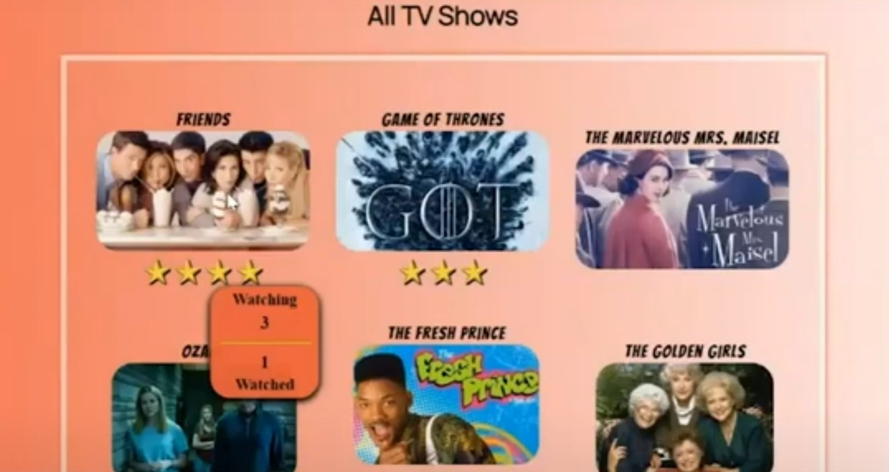
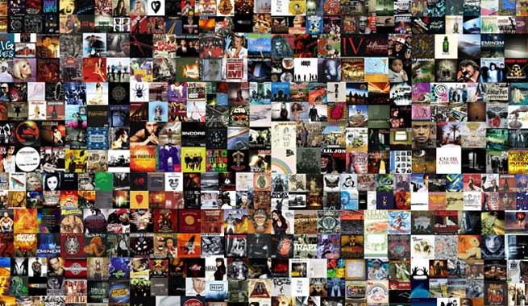

 QuaranTV Share input of TV shows, and manage personal lists Presentation Code JavaScript | C# | HTML | CSS
 AppleJax Music Keep track of a large collection of music by artists, albums and songs Code JavaScript | C# | HTML | CSS